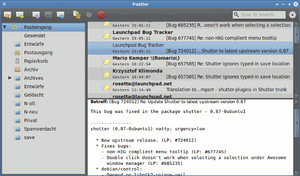

Postler
Archivierte Anleitung
Dieser Artikel wurde archiviert, da er - oder Teile daraus - nur noch unter einer älteren Ubuntu-Version nutzbar ist. Diese Anleitung wird vom Wiki-Team weder auf Richtigkeit überprüft noch anderweitig gepflegt. Zusätzlich wurde der Artikel für weitere Änderungen gesperrt.
Anmerkung: Die Entwicklung von Postler wurde eingestellt. Ein alternatives Programm mit vergleichbarem Funktionsumfang ist Geary.
Zum Verständnis dieses Artikels sind folgende Seiten hilfreich:
Postler ist ein E-Mail-Client aus dem Elementary Project  . Das schlanke und aufgeräumte Programm informiert mit Desktop-Notizen über eingehende Mails. Die Verwaltung von Kontakten übernimmt das separate Adressbuch Dexter. Postler beherrscht ausschließlich IMAP (kein POP3) und stellt Verzeichnisse und Mails übersichtlich dar. Außerdem kommt es mit praktischen Voreinstellungen, so werden beispielsweise externe Grafiken nur auf Wunsch nachgeladen.
. Das schlanke und aufgeräumte Programm informiert mit Desktop-Notizen über eingehende Mails. Die Verwaltung von Kontakten übernimmt das separate Adressbuch Dexter. Postler beherrscht ausschließlich IMAP (kein POP3) und stellt Verzeichnisse und Mails übersichtlich dar. Außerdem kommt es mit praktischen Voreinstellungen, so werden beispielsweise externe Grafiken nur auf Wunsch nachgeladen.
Installation¶
 Das Programm ist nur bei Ubuntu 12.04 in den offiziellen Paketquellen enthalten. Folgendes Paket muss installiert [1] werden:
postler (universe)
 mit apturl
mit apturl
Paketliste zum Kopieren:
sudo apt-get install postler
sudo aptitude install postler
Manuell¶
Bei Interesse kann man Postler auch kompilieren und manuell installieren: Postler/Kompilieren
Bedienung¶
Postler kann bei Ubuntu-Varianten mit einem Anwendungsmenü über den Eintrag "Internet -> Postler" gestartet [2] werden. Unter Unity benutzt man den Programmnamen.
Beim ersten Start werden E-Mail-Adresse und Passwort abgefragt. Über die angegebene E-Mail-Adresse versucht Postler die Angaben unter "Erweitert" korrekt für IMAP einzustellen. Hier muss man ggf. nachbessern.
Weitere Konten können später über einen Eintrag im Kontextmenü hinzugefügt werden. Um die Einstellungen für ein Konto später zu bearbeiten, öffnet man über einen Rechtsklick  die "Kontoeinstellungen".
die "Kontoeinstellungen".
Werkzeugleiste¶
Die Werkzeugleiste bietet die Funktionen zum Versenden und Verwalten der Mails und eine Suchmaske. Die Icons zeigen Tooltipps, die ihre Funktion erläutern, wenn man sie mit der Maus überfährt.
Eine neue Mail wird in einem eigenen Dialog erstellt, in dem auch Dateien angehängt werden können.
Kontextmenü¶
Ganz rechts in der Werkzeugleiste ist das Kontextmenü zu finden. Es beinhaltet diese Einträge:
"Gelesene Verbergen" - zeigt nur noch ungelesene Mails an
"Vollbild"
"Neues Konto" - zur Angabe weiterer E-Mail-Konten
"Report a problem..." - einen Fehler in Postler auf Launchpad melden
"Info" - Copyright und Mitwirkende
 - Blogbeitrag, 02/2011
- Blogbeitrag, 02/2011- Erstellt mit Inyoka
-
 2004 – 2017 ubuntuusers.de • Einige Rechte vorbehalten
2004 – 2017 ubuntuusers.de • Einige Rechte vorbehalten
Lizenz • Kontakt • Datenschutz • Impressum • Serverstatus -
Serverhousing gespendet von